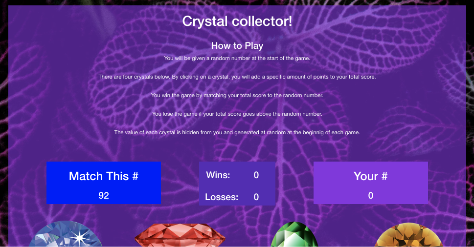
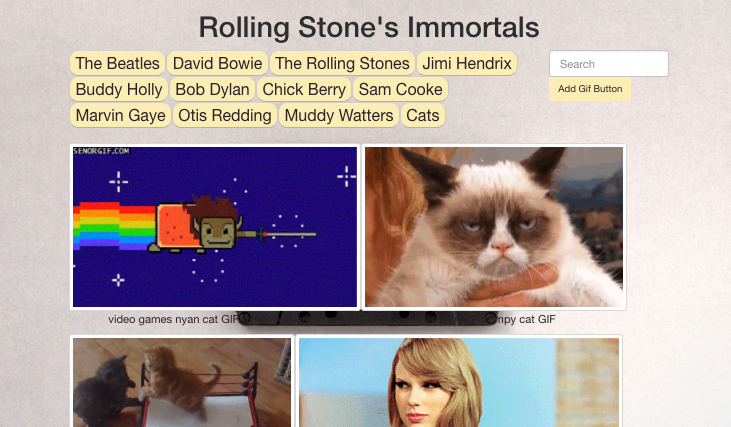

About Me
Web Developer with 10 years of experience in IT helpdesk for the U.S. Coast Guard. Strong background in troubleshooting and understanding user-friendly solutions to everyday problems and training on how to utilize technology using plain english. Recent college graduate with a BS in psychology which has provided even more perspective on the human experience and a keen sense on what people are looking for in design. Passionate about helping others achieve their goals through collaboration by pointing out their strengths and using them to their best ability. Always continuing to strengthen my abilities as a web developer and as a small team leader.
-
More About MeI was homeschooled throughout my elementary and highschool career and after I graduated I joined the U.S. Coast Guard where I spent 8 years as an Information Systems Technician working helpdesk troubleshooting user issues on networked computers, printers, and phones. After I fulfilled my obligation to the government, I spent 2 years as a contractor under Dell Services: Federal Government performing the same services for the Coast Guard. The job went away after a government shutdown and I pursued a degree at Texas A&M University Corpus Christi where I graduated Magna Cum Laude with a BA in Psychology and a minor in theatre. I spent a year in Florida helping out my sister and brother-in-law with their family business. Moving back to Texas after a year allowed me the opportunity to go back into the learning environment at UT Austin for a 12-week coding bootcamp which has allowed me to call myself a junior developer. I am currently seeking an entry level position where my past knowledge and skills will allow me to stay in this learning mode and flourish within the ever creative field of full-stack web development.
EducationSchool Certificate Dates University of Texas at Austin Coding Bootcamp Certificate Oct. 2018 - Jan. 2019 Texas A&M Univeristy - Corpus Christi BS - Psychology, Minor - Theatre
Dean's List, Magna Cum LaudeJan. 2014 - May 2017 United States Coast Guard Information Systems Technician Aug. 2004 - May 2005 Technical SkillsComputer Science • Design Patterns • Algorithms Browser Based Technologies • HTML5 • CSS • Responsive Design • CSS Frameworks (Bootstrap, Materialize) • JavaScript • jQuery • Handlebars • Cookies, Local Storage • React.js Deployment • Heroku • Git PHP (Server Side Development) • Laravel Node.js (Server Side Development) • Express • Security and Session Storage • User Authentication • MERN Stack (MongoDB, Express.js, React.js, Node.js) Databases • Firebase • MySQL • MongoDB Quality Assurance • Writing Tests Internet Marketing • SEO • Semantic HTMLWork HistoryCompany Title Dates Urban Axes Axe Coach July 2018 - Present JB Tutoring LLC Math Tutor July 2018 - Present Strong Landscaping Designer July 2017 - Jun. 2018 Texas A&M Univeristy - Corpus Christi Learning Community Mentor Jan. 2017 - May 2017 Dell Services: Federal Government Systems Analyst II Mar. 2012 - Jan. 2014 United States Coast Guard Information Systems Technician 2nd Class May 2004 - May 2012
Portfolio
-
Fork Off!
Team Project/APIs/GitHub
Google Maps and Zomato APIs used to retrieve local resturant info and Google Firebase database to sync 2 or more users to choose a resturant in a Tinder-like fashion.
-

Crystal Collector
Javascript/jQuery
Using jQuery and Javascript to manipulate HTML. CSS styling using Bootstrap.
-

Immortals
GIPHY API/AJAX/jQuery
A simple app using JavaScript and jQuery to change HTML to populate GIFs and AJAX for retrieving data from GIPHY. Clicking changes the "data state" (animate/still). The search box adds buttons to page for querying GIPHY.
-

Trivia
jQuery Dom Manipulation
A random triva app using JavaScript and jQuery to manipulate HTML and keep track of answers.